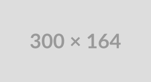

Keto Cake Pops
With just 3g net carbs in each one, indulge in these keto cake pops at your next party or get together! They are also amazing for curbing quick sweet cravings. This cake pop recipe is for chocolate cake pops with notes to make other flavors.
Frosted Vanilla Donuts
These paleo frosted vanilla donuts are a huge treat and easy to make, too! Healthy gluten free and dairy free baked donuts are dipped in a creamy vanilla frosting for a fun treat everyone will love. If you don’t have a donut pan, make them into cupcakes!
Keto Onion Rings
Now you can enjoy this classic fast food alternative to fries again. It's a low-carb snack or appetizer that everyone will love!
McDonald's Big Mac Casserole
If you're craving the iconic flavors of a McDonald's Big Mac but want to keep it low-carb, this Keto Big Mac Casserole is just the thing you need. It's easy to make, packed with all the classic Big Mac toppings, and perfect for meal prep or a family dinner. Plus, it's gluten-free and keto-friendly!
Fluffy Almond Flour Pancakes
Delicious hot and fluffy almond flour pancakes make a fantastic low-carb breakfast! They taste just like the ones you ate as a kid. But these come from an easy, gluten-free, keto recipe.
Maple Cinnamon Candied Pecans
These crunchy, sweet and salty maple cinnamon candied pecans are a breeze to make and contain no refined sugar or dairy. They’re a naturally gluten free and paleo treat that are perfect for holiday gifts, as salad toppers or by the handful as a sweet snack.
Butternut, Apple, and Chicken Sausage Hash
This toasty, savory + sweet butternut squash hash with chicken sausage and apples is perfect for weekend brunches or breakfast for dinner! It’s easy to make ahead of time for a quick breakfast. Grain free, dairy-free, with no added sugar, and Whole30 compliant.
Roasted Frozen Broccoli
I'd love to be one of those people who finds chopping vegetables therapeutic, who derives joy from lovingly slicing broccoli into cute, evenly-sized florets. I do not, which is exactly why I am thrilled to report that you can make ROASTED FROZEN BROCCOLi.
Turkey Keema Curry
Packed with fresh and zingy flavours and plenty of punchy spices, this low-calorie, high-protein Indian turkey mince curry makes an easy midweek meal.